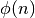

Totient maximum¶
Problem 69
Euler’s Totient function,  [sometimes called the phi function], is used to determine the number of numbers less than n which are relatively prime to n. For example, as 1, 2, 4, 5, 7, and 8, are all less than nine and relatively prime to nine, φ(9)=6.
| n | Relatively Prime | φ(n) | n/φ(n) |
| 2 | 1 | 1 | 2 |
| 3 | 1,2 | 2 | 1.5 |
| 4 | 1,3 | 2 | 2 |
| 5 | 1,2,3,4 | 4 | 1.25 |
| 6 | 1,5 | 2 | 3 |
| 7 | 1,2,3,4,5,6 | 6 | 1.1666... |
| 8 | 1,3,5,7 | 4 | 2 |
| 9 | 1,2,4,5,7,8 | 6 | 1.5 |
| 10 | 1,3,7,9 | 4 | 2.5 |
It can be seen that n=6 produces a maximum n/φ(n) for n <= 10.
Find the value of n <= 1,000,000 for which n/φ(n) is a maximum.
Solution
Use the euler07.primeGen() function.
import pprint
from collections import defaultdict
from euler07 import primeGen
Construct totient table? An inverse Sieve of Eratosthones. We discard common prime factors
Closer to  performance. Not good.
performance. Not good.
def phi_table(limit=10):
tt= dict( (i,set(range(1,i))) for i in range(2,limit+1) )
# Decrement totient count for each prime value
for i in range(2,limit+1):
if len(tt[i]) == i-1: # prime
#print( "Prime", i )
for v in range(i,limit+1-i,i):
#print( "remove", v, "from", i+v, i+i+v, "..." )
for n in range(i+v, limit+1, i):
tt[n].discard(v)
else: # composite
#print( "Factors", i, set(range(1,i))-tt[i] )
pass
#pprint.pprint( tt )
return( dict( (i, len(tt[i])) for i in tt ) )
Iterate through totient values. Yields a sequence of i, φ(i) values
def phi_iter(limit=10):
"""Construct totient summary.
Decrement totient count for each distinct prime value.
>>> phi= list( phi_iter(10) )
>>> phi
[(2, 1), (3, 2), (4, 2), (5, 4), (6, 2), (7, 6), (8, 4), (9, 6), (10, 4)]
"""
remove= defaultdict(set)
for i in range(2,limit+1):
if len(remove[i]) == 0: # prime
for v in range(i, limit+1-i, i):
for n in range(i+v, limit+1, i):
# for all n | i+v <= n=(k*i) <= limit
# for all v | i <= v=(k*i) <= limit-i
remove[n].add(v)
yield i, i-1-len(remove[i])
del remove[i]
Test the module components.
def test2():
"""Compare phi_table() and phi_iter()."""
phi= phi_table(60)
phi2= dict(phi_iter(60))
assert phi == phi2, "{0} != {1}".format(phi,phi2)
def check2():
limit= 2311
phi= phi_table(2311)
for n in 2, 6, 30, 210, 2310:
print( n, phi[n], n/phi[n] )
def test():
"""
>>> check2()
2 1 2.0
6 2 3.0
30 8 3.75
210 48 4.375
2310 480 4.8125
"""
import doctest
doctest.testmod(verbose=0)
Compute an answer.
Examine the totient table. Up to 30030 takes 80 sec. However, this version is useful for checking results.
def answer1(limit=30030):
maxI= None
maxRatio= 0, 1
for n, totient in phi_iter(limit):
#print( n, totient, n/totient )
# compare maxRatio with i/totient
if n*maxRatio[1] > maxRatio[0]*totient:
maxRatio = ( n, totient )
maxI= n
print( n, totient, n/totient )
return maxI
Much better.
Max φ(n) achieved when we have the MOST distinct prime factors. So, the product of primes 2*3*5*7*11*13*17 should do it.
def max_phi_gen():
"""
>>> list( max_phi_gen() )
[(2, [2]), (6, [2, 3]), (30, [2, 3, 5]), (210, [2, 3, 5, 7]), (2310, [2, 3, 5, 7, 11]), (30030, [2, 3, 5, 7, 11, 13]), (510510, [2, 3, 5, 7, 11, 13, 17])]
"""
limit= 1000000
primes= []
prod= 1
prods= []
for p in primeGen():
if prod*p > limit: break
prod *= p
primes.append( p )
prods.append( prod )
yield prod, primes[:]
def answer2():
phi_table= list( max_phi_gen() )
return phi_table[-1][0]
Confirm the answer.
def confirm(ans):
assert ans == 510510, "{0!r} Incorrect".format(ans)
Create some output.
if __name__ == "__main__":
test()
ans= answer2()
confirm(ans)
print( "The value of n <= 1,000,000 for which n/phi(n) is a maximum:", ans )